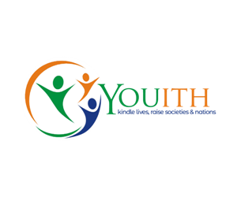

YOUITH
STARTER BOOKET
What is Our Purpose:
Young United Initiative for Transformation and Hospitality (YOUITH), is a non-profitable, advocacy and campaign organization aimed at promoting the unity, welfare and intellect of youths, teenagers, women orphans and vulnerable children in the society.
The role of youths in the society is to renew, refresh and maintain. Youths, being the bedrock of every society, have a role to play in renewing the current status of the society including leadership, innovation, skill etc.
Our Mission:
To contribute towards a better society for sustaining a better life
Executive Summary/Purpose:
The role model of YOUITHs involves corporating with Philantropists, CEOs, Business Owners, International Organizations and government agencies who are dedicated towards training, building and sustaining the basic needs for dignified living among orphans and vuinerable women, children, and youth in the society.
Who can Join:
The Person with this Qualities:
- Integrity
- Honesty
- Dignity
- Dedication
- Exemplary conduct towards making Nigeria and the world a better and peacefull haven for evry human.
- Whose Goal is to ensure that people live happily, fulfilled and safe.

|


|
Core Thematic Areas:
- To unite and build a vible and formidable structure among youths.
- Rendering of humanitorian services across nation state ranging from:
- Social Services
- Economic Empowerment
- Community-led Development/Poverty Alleviation
- Mentoring, Coaching, Capacity building, Guidance and Counselling
- Research and Documentation
- Institutional Development
- Partnesership
- Foster Peace among diverse Ethnic and Religion Groups